The story so far
Hover to preview, click to open.Tap any card to open.
-
2026
Applied AI in production.
-
- Improved successful-call completion by 40% for a healthcare client by evaluating 5 Amazon Bedrock LLMs and debugging voice-agent failures.
- Deployed AI-driven workflows for 7 healthcare clients, building Python/YAML agents for scheduling, assessments, follow-ups, lab retrieval, and IVR.
- Integrated REST APIs so agents could schedule appointments and retrieve lab results from external systems.
- Reached a 96% automated conversation-test pass rate with 150+ Cekura and local tests.
- Resolved production agent issues using Grafana logs and Docker/Kubernetes debugging.
-
2025
Shipping for real users, from a startup in Singapore to 36 hours at HackIllinois.
-
UIUC recorded 1,210 academic integrity reports in 2024–25, and unreliable AI detectors leave students open to false accusations. UNFAIR gives them evidence instead: a Chrome extension that records their AI conversations on ChatGPT, Claude, and Gemini and exports a transcript they can share with instructors.
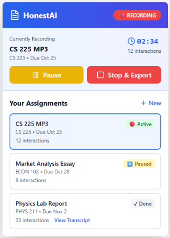
01Record per assignment
Students start a recording for a specific assignment from the extension popup. A live timer and interaction count show what's being captured, with controls to pause or stop and export.
Each assignment keeps its own history and is marked Active, Paused, or Done, so work on several courses stays separate. Finished assignments link straight to their transcript.
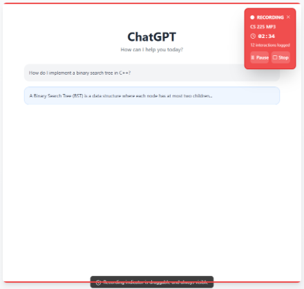
02Always-visible indicator
While a student uses ChatGPT, Claude, or Gemini, a small indicator sits on the page showing the assignment, elapsed time, and interactions logged so far.
It's draggable but can't be hidden, so students always know when they're being recorded. Pause and stop work without leaving the chat.
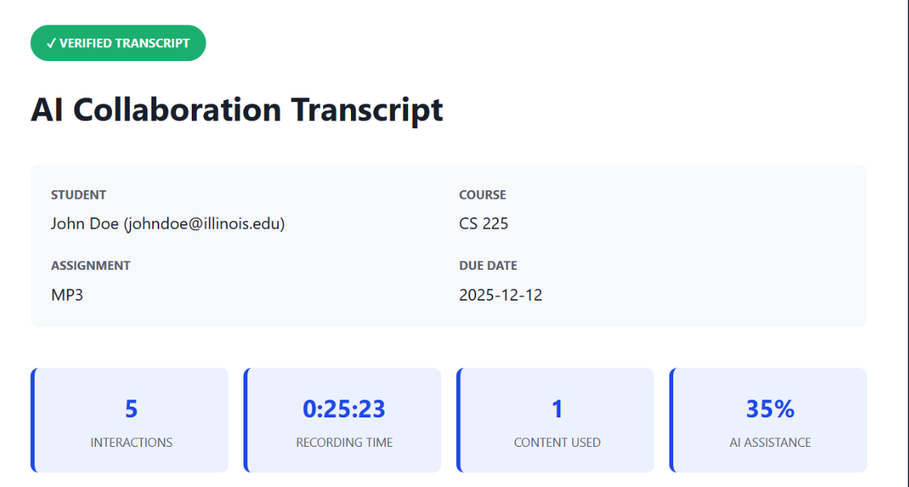
03Verified transcript
Stopping a recording generates a transcript tied to the student, course, assignment, and due date, ready to hand to an instructor.
A summary up top gives the key numbers at a glance: total interactions, recording time, how many AI responses the student actually used, and an estimate of how much of the work was AI-assisted.
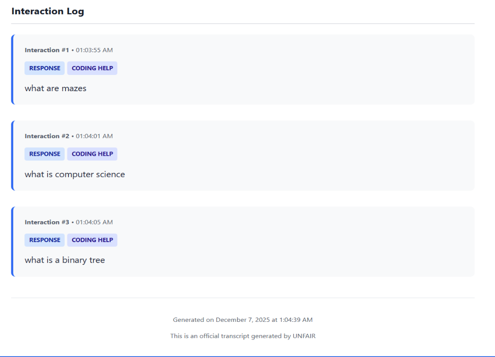
04Complete interaction log
Below the summary, every interaction is numbered and timestamped, and tagged by type, such as coding help, so an instructor can scan the log quickly.
An instructor can see that a student asked conceptual questions like "what is a binary tree" rather than asking for the finished assignment. Each transcript is stamped with when it was generated.
I wrote the TypeScript capture layer, which logs timestamped interactions across three sites with very different page structures, plus the Firebase storage and the Next.js review dashboard. Interviews with students and professors shaped what the transcript shows.
-
- Built 3 marketplace workflows (app listings, subscriptions, Stripe payments) with Next.js and Supabase, enabling end-to-end purchases.
- Secured account access with Google OAuth and role-based access control.
- Built dynamic listing filters for real-time app discovery.
- Converted 20+ leads into active users through demos and pitches to 50+ prospective partners.
-
Plans with friends and family fall apart over busy schedules and time zone mix-ups, and the more people involved, the worse it gets. ZyncUp syncs everyone's Google Calendar and suggests meeting times that work for the whole group. We built it in 36 hours at HackIllinois 2025 as a team of four.
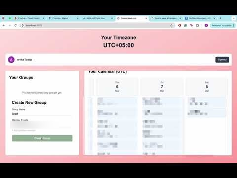
Watch the demo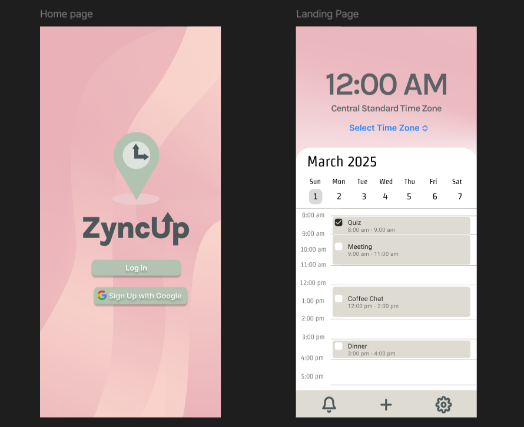
01Sign in and see your week
Users sign up with Google, which gives ZyncUp read-only access to their calendar. The home screen shows the current time in their chosen time zone above a day view of their synced events.
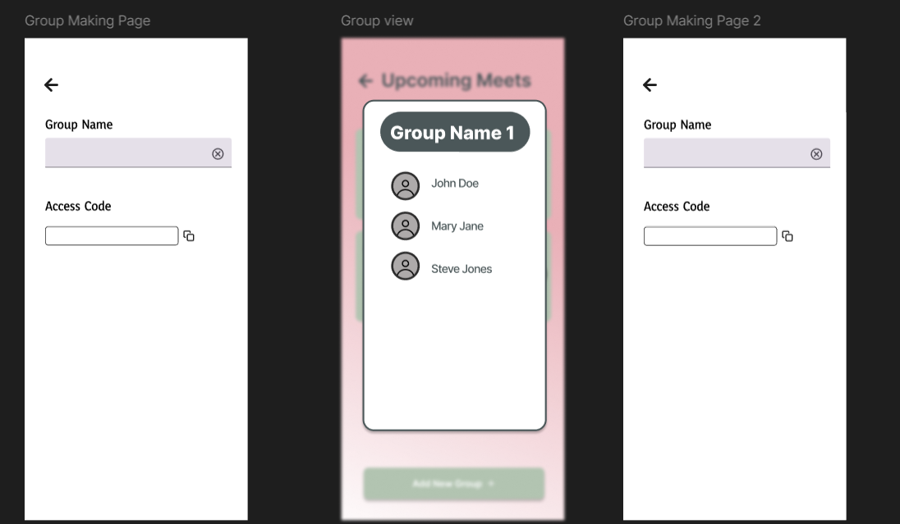
02Form a group
Creating a group generates an access code to share. Friends enter the code to join, and the group view lists everyone in it.
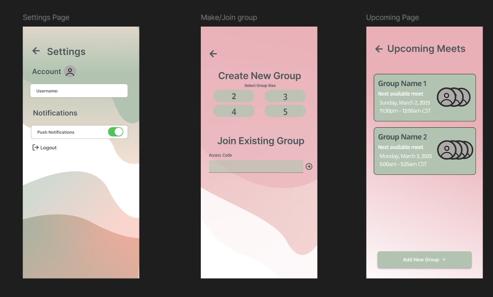
03Upcoming meets
Each group shows its next available meeting time, in the viewer's own time zone. Users can create a new group by size or join one by code, and turn on push notifications in settings.
Screens above are the team's Figma designs.
Under the hood: each member's events for the coming week are pulled from the Google Calendar API into Firestore. The app merges everyone's events, converts them to UTC, and finds the gaps long enough for a meeting. A slot is kept only if it falls between 8 AM and 2 AM in every member's local time.
-
2024
First full-stack team project, and first time leading a team.
-
UIUC students mostly sell things on the campus Snapchat story, where game tickets and clothes are buried in an endless feed. UIUC Marketplace gives them a dedicated place to list items, search for deals, and check out, all behind a login. Built with a 4-person team.
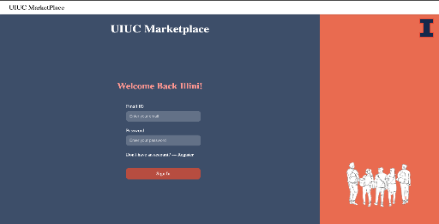
01Sign in with JWT
Login and sign-up are centered on screen and link to each other. On a successful login, the server issues a JSON Web Token that the browser stores.
That token goes with every request to a protected route, so only signed-in students can browse or sell.
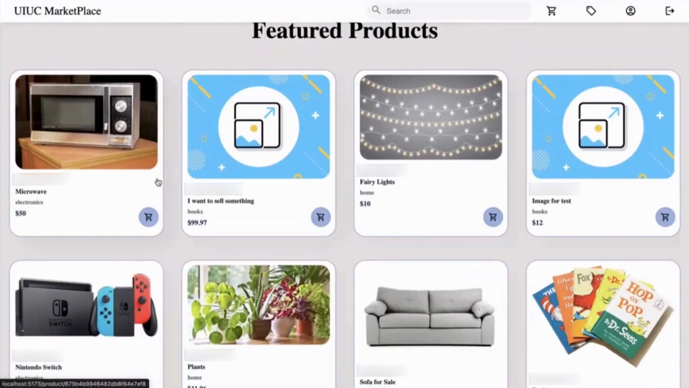
02Featured listings
Listings take up the home page, because selling is the whole point. The newest items are pulled from the database as featured products, each showing the seller, category, price, and a quick add-to-cart button.
A responsive navbar links to search, cart, new listing, profile, and logout on any screen size.
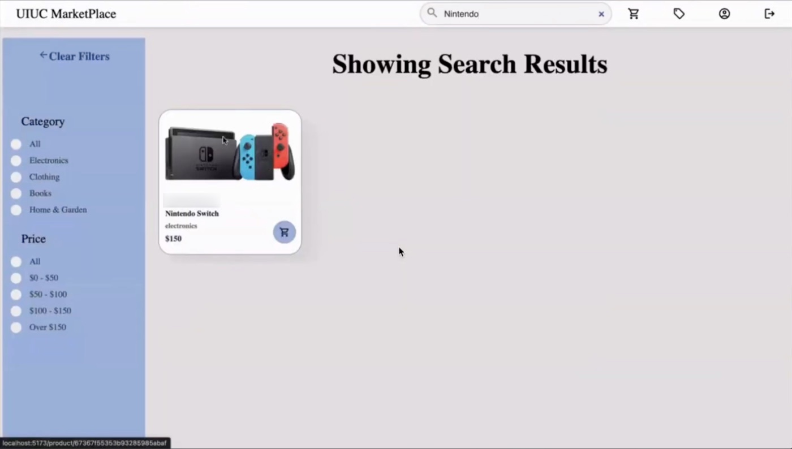
03Search and filter
A search generates its own URL route, which the item router hands to a
filterItemscontroller before sending the user to the results page.From there, students can narrow results by category or price range, or clear the filters to start over.
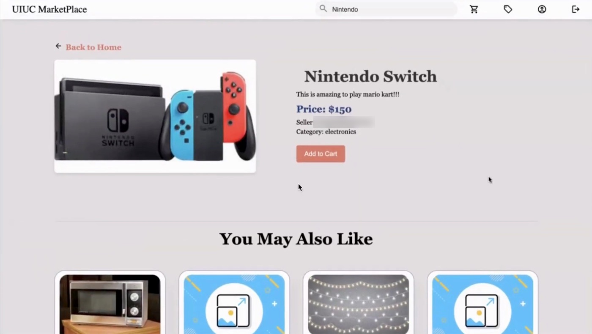
04Product page
Each listing has its own page with the photo, the seller's description, price, seller, and category, plus an Add to Cart button.
A "You May Also Like" row below suggests other listings so buyers keep browsing.
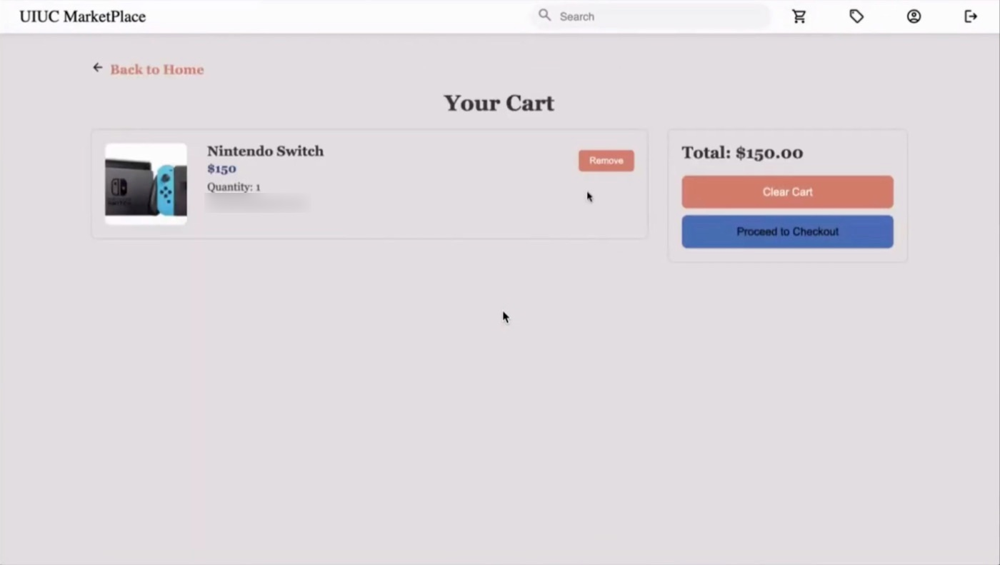
05Cart
The cart lists everything a buyer has added, with a running total. Items can be removed one at a time, or the cart can be cleared before checkout.
Each user's cart is stored on their user record as an array of item IDs, and a cart controller handles add, remove, and empty.
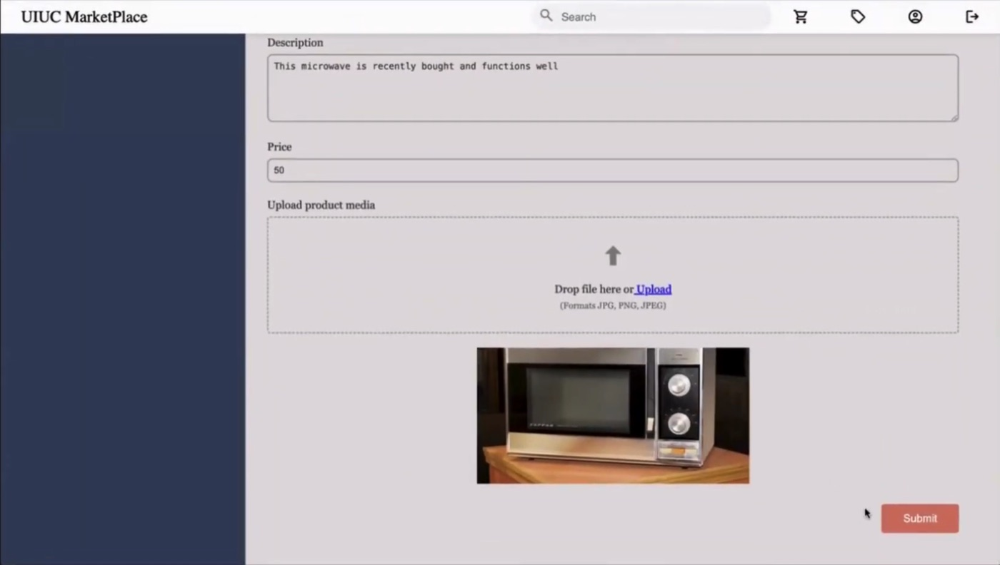
06Post a listing
Sellers enter a name, category, description, and price, then upload photos with a preview. Category and price also power the search filters.
The form is sent as a multipart request through auth middleware. Multer then processes the images, and the item is checked against the item schema before it's saved.
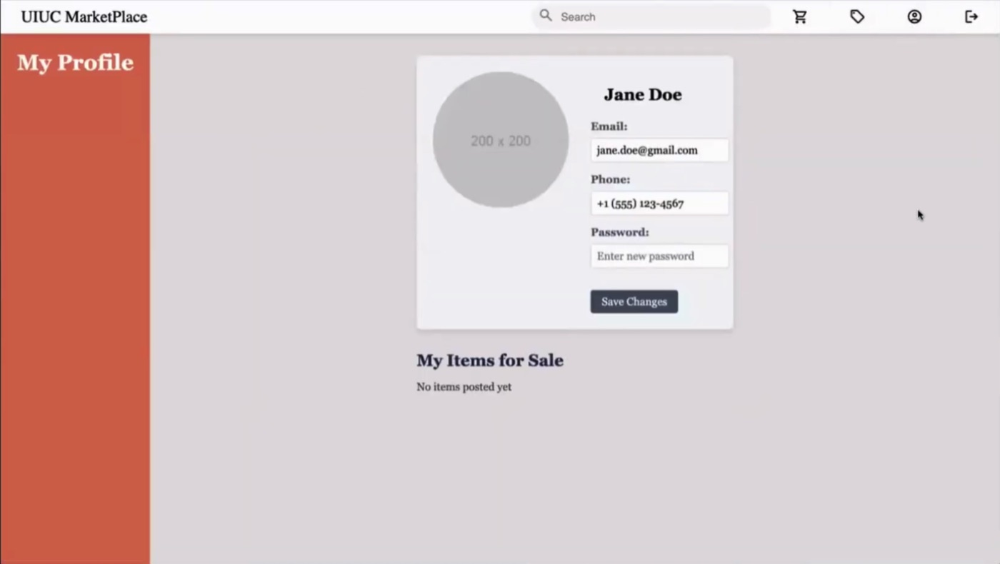
07Profile
Users can update their name, email, password, and profile picture, and see everything they've listed in one place.
After authentication, the backend fetches every item whose seller matches the signed-in user's email, newest first.
We also added real-time buyer–seller messaging over WebSockets and React Testing Library tests for key interactions.
-
- Team lead: led a 10-person cross-functional team, managing project timelines, facilitating 12+ client working sessions, and reviewing weekly deliverables.
- Founder matching tool: led development of a web scraper and data-mapping algorithm that matches entrepreneurs with relevant accelerators, mentors, and resources.
- Veterinary consulting service: delivered a 5-point go-to-market strategy that identified 3 target segments and 5 partnership opportunities.
- Park district: delivered a 3-year strategic plan, with initiatives projected to improve operational efficiency by 12% and customer engagement by 18%.
Both strategy projects were built on market research, competitor analysis, and stakeholder interviews.